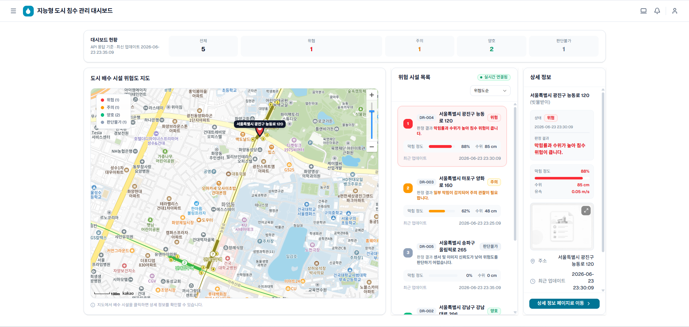
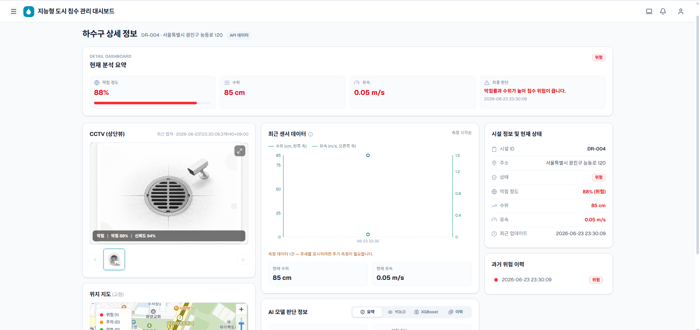

75%
MVP 코드 근거 확보 수준
핵심 코드·설정 확인, 최신 실행 검증은 남음SmartDrain project status
SmartDrain은 현장 관찰에서 AI 분석, 위험 판단, 실시간 확인, 운영 확장까지 이어지는 흐름을 목표로 구성했습니다. 현재는 코드·설정 근거를 교차 확인하고, 고도화를 위한 기준을 정리하는 단계입니다.
MVP 코드 근거 확보 수준
핵심 코드·설정 확인, 최신 실행 검증은 남음고도화 로드맵 실행도
Phase 0–5 평균 8.3%를 반올림How it is composed
기술 자체보다, 사용자가 현황을 보고 판단하고 다음 조치를 준비하는 흐름에 초점을 둡니다.
배수 상태와 현장 신호를 한 화면에서 확인합니다.
AI 분석 결과가 상황을 읽는 단서가 됩니다.
수위와 위험 신호를 바탕으로 우선순위를 가늠합니다.
대시보드와 상세 화면에서 변화와 근거를 확인합니다.
인증, 현장 작업, 이벤트 운영은 다음 단계로 남아 있습니다.
Visible outcomes
화면은 구현된 사용 경험의 단면입니다. 실제 장비 연동이나 운영 기능의 완료를 뜻하지는 않습니다.

여러 배수 지점의 상태를 한눈에 비교하고, 주의가 필요한 곳을 빠르게 찾는 진입점입니다.

선택한 지점의 상태와 분석 단서를 살펴보며, 다음 판단에 필요한 맥락을 확인합니다.
Progress by domain
공식 품질 지표나 최근 실행 성공률이 아닌, 저장소에서 확인한 코드·설정과 검증 증거를 읽기 쉽게 정리한 정성 요약입니다.
메인·상세 화면과 관련 코드 근거가 있으나, 최근 전체 흐름 실행은 확인하지 않았습니다.
분석 결과를 화면에 연결하는 코드 근거가 있으나, 최신 통합 실행 근거는 남아 있습니다.
서비스를 나누어 실행할 설정 근거는 있으나, 현재 Compose smoke는 실행하지 않았습니다.
구조를 정리하고 다음 작업의 기준을 남기는 흐름이 진행 중입니다.
일부 정적·개별 검증 근거는 있으나, 최근 전체 E2E 실행 확인은 남아 있습니다.
실제 CCTV·IoT, 인증·권한, 현장 작업, MQTT, 일일 보고서는 구현 완료로 보지 않습니다.
Journey so far
2026-06-17부터 2026-07-06까지, 화면과 서비스 기반을 만들고 고도화 방향을 정리한 작업 묶음입니다.
배수 상태를 빠르게 읽을 수 있는 대시보드와 상세 화면의 사용 경험을 구성했습니다.
화면 이미지로 확인 가능한 메인·상세 흐름과 분석 단서를 연결했습니다.
구조, 문서, 검증 근거를 교차 확인하며 Phase 0–5의 다음 순서를 세웠습니다.
Phase 0–5 roadmap
로드맵 실행도는 (50 + 0 + 0 + 0 + 0 + 0) / 6 = 8.3%이며, 보고서에서는 8%로 표시합니다. 현재 위치는 Phase 0입니다.
코드·문서·검증 근거를 교차 확인하고 작업 기준을 맞춥니다.
운영 주체의 접근 경계와 기준정보를 다루는 기반을 마련합니다.
작업 요청부터 현장 처리까지의 업무 흐름을 설계하고 연결합니다.
상태 변화를 안정적으로 전달하고 추적할 이벤트 기반을 만듭니다.
일일 운영 정보를 정리하고 분석 흐름을 연결하는 단계를 준비합니다.
운영 모니터링과 실제 장비·현장 연동을 검증하는 단계입니다.
Scope at a glance
보이는 화면과 현재 기반이 무엇을 뜻하는지, 아직 약속하지 않은 범위가 무엇인지 분리해 읽을 수 있게 정리했습니다.
What comes next
기능을 넓히기 전에 현재 기반을 최신 상태로 확인하고, 실제 운영에 필요한 경계를 차례로 세웁니다.
Evidence & limits
이 보고서는 확인한 사실과 아직 확인하지 않은 조건을 구분합니다.
퍼센트는 공식 품질 지표나 운영 준비도가 아닙니다. 모두 같은 정성 척도에서 문서화된 목표 대비 저장소의 코드·설정·검증 증거를 요약한 값이며, 최근 실행 성공률을 뜻하지 않습니다.
이 보고서를 위해 현재 전체 E2E·Compose smoke는 실행하지 않았습니다. 정적 검토에서는 Backend router import 불일치 후보가 발견되어 현재 기동이 보장되지 않습니다. 따라서 실제 CCTV·IoT 연동, 인증·권한, 현장 작업, MQTT, 일일 보고서는 구현 완료로 표현하지 않습니다.